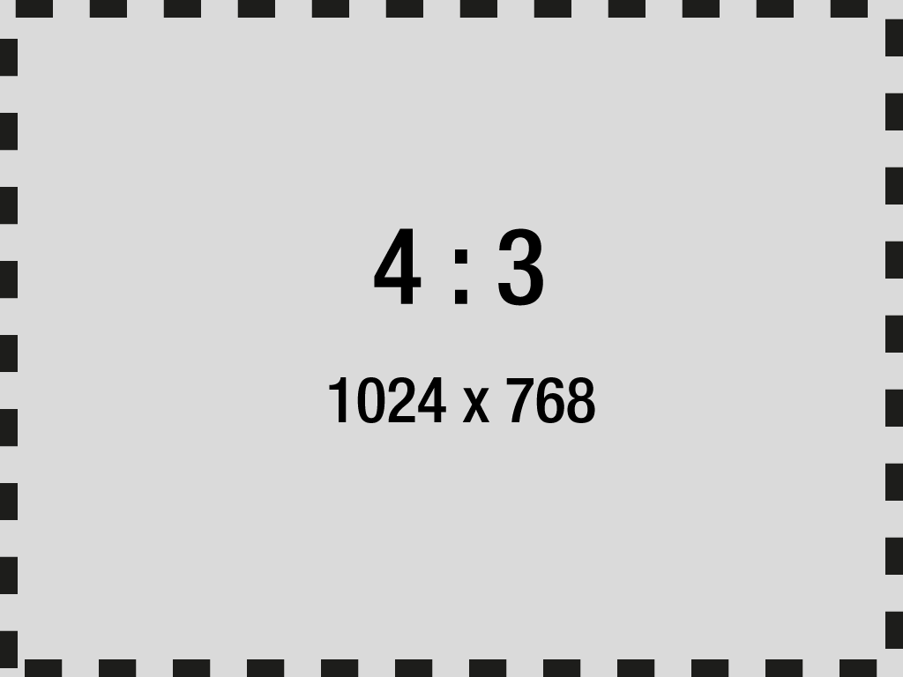

<!doctype html>
<meta charset="utf-8">
<title>Fullscreen</title>
<style>
* {
  margin: 0;
  padding: 0;
}
img {
  display: block;  
}
#stage {
  width: 100%;
  height: 100%;
  background-color: black;
}
#stage:fullscreen img{
  /* Center horizontally
  height: 100%;
  margin: 0 auto;
  */
  /* stretch to fit
  width: 100%;
  height: 100%;
  */
  /* Center vertically
  position: fixed;
  width: 100%;
  height: auto;
  top: 0;
  right: 0;
  bottom: 0;
  left: 0;
  margin: auto;
  */
}
#stage:-webkit-full-screen img{
  /* Center vertically */
  position: fixed;
  width: 100%;
  height: auto;
  top: 0;
  right: 0;
  bottom: 0;
  left: 0;
  margin: auto;
}
</style>

<div id="stage">
  
  <!--
  
  -->
</div>

<script src="../library/plugins/traceur-compiler/bin/traceur.js" type="text/javascript"></script>
<script src="../library/plugins/traceur-compiler/src/bootstrap.js" type="text/javascript"></script>
<script>traceur.options.experimental = true;</script>
<script type="module">

let stage = document.querySelector("#stage");

//Add a requestFullscreen polyfill to the stage
let vendors = ["ms", "webkit", "o", "moz"];
vendors.forEach(vendor => {
  if (!stage.requestFullscreen) {
    stage.requestFullscreen = stage[vendor + "RequestFullscreen"];
  }
});

stage.addEventListener("mousedown", event => {
  //Make the canvas display full screen
  stage.requestFullscreen();
}, false);

</script>
